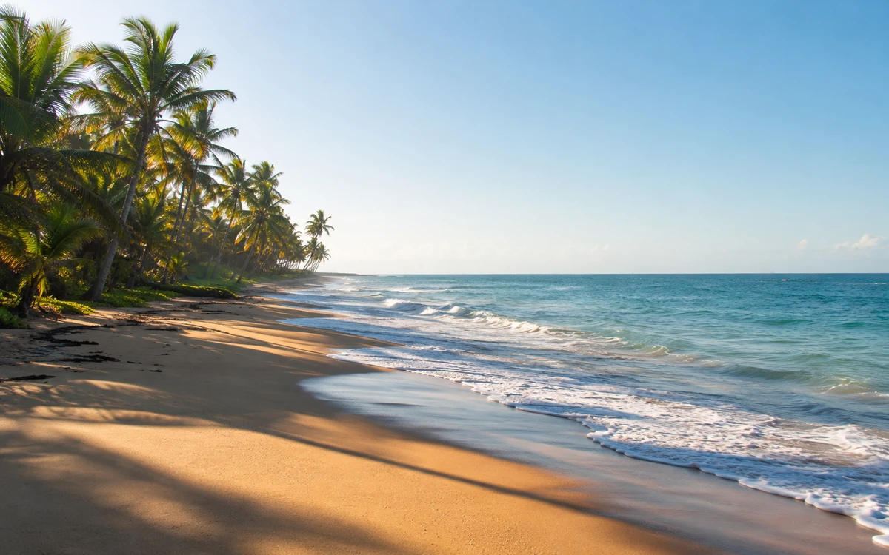

Repères
Un espace vivant et fragile
Le littoral désigne la zone de rencontre entre la terre et la mer. Il peut comprendre plages, zones rocheuses, embouchures, lagunes, mangroves, milieux humides et espaces habités ou utilisés par les communautés.

Sa protection demande une attention aux déchets, à l'érosion, à la biodiversité, aux usages humains et à la transmission de comportements responsables.